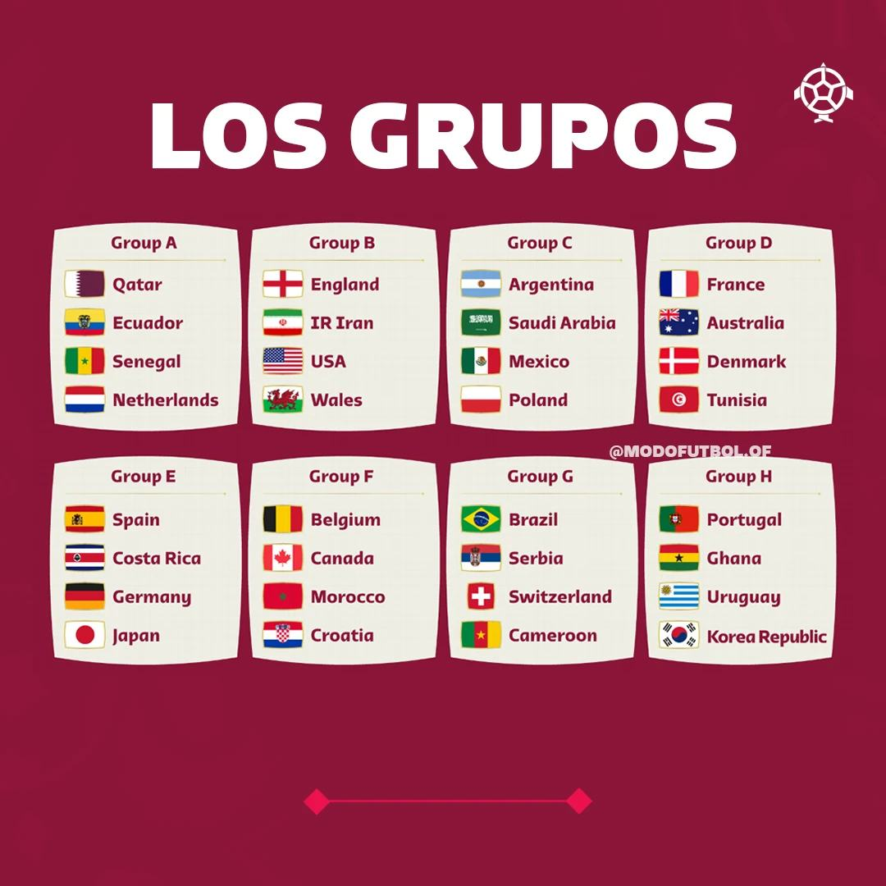

LIVECH 02
Esteban GuillenVideo Editor & Videographer · Graphic Designer · Miami, FL
Now showing
MercyMe 2025Live photography · 22 photos
On air
1.3M+ views on political videoVideo Editor & Videographer at Harris Media Group60 concert photos: MercyMe, Crowder, for KING & COUNTRY53 posters for Peruvian footballQatar 2022: 37 piecesSince 2018 · From Lima to MiamiAvailable for full-time and freelance work1.3M+ views on political videoVideo Editor & Videographer at Harris Media Group60 concert photos: MercyMe, Crowder, for KING & COUNTRY53 posters for Peruvian footballQatar 2022: 37 piecesSince 2018 · From Lima to MiamiAvailable for full-time and freelance work
Introduction
I edit, shoot, design and photograph work that goes on air: campaign spots with hundreds of thousands of views, live concerts, match days and brands that post every day.
TV guide · 2018 — today
Eight years
on air.
Career and projects by channel. Hover over a show to preview it in the window.
Channel
201820192020202120222023202420252026
CVCareer
Harris Media GroupVideo Editor & VideographerFreelanceConcert PhotographerClubs, players and brandsFreelance Graphic DesignerDigitalia TECGraphic DesignerArturo's BurgerGraphic DesignerSoporte Total GUIMI S.A.Graphic Designer01Political video
02Live photography
03Sports design
04Branding and social
05Web and UI
06Gaming
Highlights
Twelve
episodes.
Drag the strip or use the arrows.
00:00:07:00
CH 01 · Political videoSam Gallucci & NH Senate Republicans900K+ views · 2026
00:00:20:07
CH 01 · Political videoBobby Charles for Maine Governor436K+ views · 2026
 00:00:33:14
CH 02 · Live photographyMercyMe 202522 photos · 2026
00:00:33:14
CH 02 · Live photographyMercyMe 202522 photos · 2026
 00:00:46:21
CH 02 · Live photographyCrowder Live22 photos · 2026
00:00:46:21
CH 02 · Live photographyCrowder Live22 photos · 2026
 00:00:59:03
CH 02 · Live photographyfor KING & COUNTRY16 photos · 2026
00:00:59:03
CH 02 · Live photographyfor KING & COUNTRY16 photos · 2026
 00:01:12:10
CH 03 · Sports designMatchday's 2022–2322 posters · 2023
00:01:12:10
CH 03 · Sports designMatchday's 2022–2322 posters · 2023
 00:01:25:17
CH 03 · Sports designNahomi Martínez Matchday's16 posters · 2023
00:01:25:17
CH 03 · Sports designNahomi Martínez Matchday's16 posters · 2023
 00:01:38:24
CH 03 · Sports designLuis Benites Matchday's15 posters · 2023
00:01:51:06
CH 04 · Branding and socialQatar 202237 pieces · 2022
00:02:04:13
CH 04 · Branding and socialPhyso · Physical therapy center30 posts · 2024
00:01:38:24
CH 03 · Sports designLuis Benites Matchday's15 posters · 2023
00:01:51:06
CH 04 · Branding and socialQatar 202237 pieces · 2022
00:02:04:13
CH 04 · Branding and socialPhyso · Physical therapy center30 posts · 2024
 00:02:17:20
CH 05 · Web and UIZena Coffee Store2 screens · 2024
00:02:30:02
CH 06 · GamingValorant Multicolor Overlays3 screens · 2022
00:02:17:20
CH 05 · Web and UIZena Coffee Store2 screens · 2024
00:02:30:02
CH 06 · GamingValorant Multicolor Overlays3 screens · 2022
Formats
What I
produce.
- F01Campaign videoEditing, motion and social cut-downs for candidates and causes.
- F02Live photographyConcerts and events: full coverage, edited and delivered.
- F03Sports designMatchday posters, fixtures, signing announcements and player graphics.
- F04Branding and socialVisual systems for brands and monthly content.
- F05Web and UILanding pages and online stores designed in Figma.